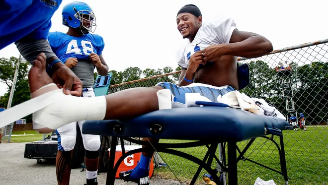
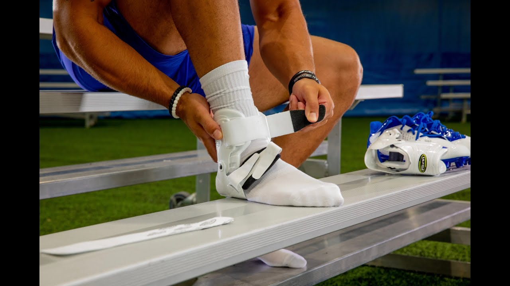

Introduction to Sports Injuries and Injury Prevention

Injury prevention in sports is an increasingly important topic in sports as athletes continue to increase their ability to perform well and competition gets more fierce. As sport remains an important part of our cultures and societies, keeping athletes healthy as they compete at a high level becomes more important. So far, the sports injury prevention field has not had a lot of research conducted that regards data. The existing studies mainly focus on how we can use machine learning and artificial intelligence to predict and prevent sports injuries. There are a few different voices in this realm including one discussing the machine learning and artificial intelligence side of things and how we can make those tools more efficient, as well as voices coming from the medical point of view striving to reduce the frequency of injuries. I would like to explore both the machine learning and artificial intelligence perspective and how we can apply those findings to athletes’ daily lives. I also would like to explore the effectiveness of injury prevention methods to see what methods are most effective in keeping athletes healthy.
Below are summaries of two of articles that represent the research that has been conducted in this field so far.
Summary: The Severity of Sports Injuries by Willem van Mechelen
The severity of sports injuries can be broken down into “6 criteria: (i) nature of sports injury; (ii) duration and nature of treatment; (iii) sporting time lost; (iv) working time lost; (v) permanent damage; and (vi) monetary cost” (Mechelen 1997). Sports injuries can be divided into several broad categories based on type of injury. In more traditional and popular sports such as football and basketball, the most common sports injuries are in the contusions or sprains on the lower extremities, though other sports such as skiing, parachute jumping, horse riding, etc, see fractures more often. We can use “data on the duration and nature of treatment” to “determine the severity of an injury” and help us evaluate what medical treatments will be most effective. From there, we can evaluate how much, if any, permanent damage there will be following the injury. (Mechelen 1997). Time away from the sport can also have an effect on an athlete’s psychosocial wellness. Fortunately 50 to 60% of all sports injuries do not lead to a substantial loss of sporting time (Mechelen 1997). Additionally, there are many costs that come from sports injuries including financial, social and financial. The two main types of social costs can be subdivided into quantifiable and unquantifiable. Quantifiable costs include “insurance costs and legal expenses” whereas unquantifiable costs include any harm caused to the athlete’s psychosocial wellness. The two main types of financial costs of sports injuries include direct costs which includes “the cost of medical treatment” and indirect costs which are considered to be “expenditure incurred in connection with the loss of productivity due to increased morbidity and mortality levels” (Mechelen 1997). An integral part to preventing such costs and effects is implementing proper sports injury prevention techniques.
Summary: Machine learning methods in sport injury prediction and prevention: a systematic review by Hans Van Eetvelde, Luciana D. Mendonça, Christophe Ley, Romain Seil, and Thomas Tischer
Sports injuries have a complex cause with the “interactions of multiple risk factors and inciting events making a comprehensive model necessary” and difficult due to the large number of factors that play a role in an injury (Van Eetvelde et al. 2021). The first half of Hans Van Eetvelde et. al article covers the way that they selected their sources. Their paper addresses the “currently used definition of ML as well as predominantly used MIL methods”, the “accuracy of the currently used ML methods to predict injury”, and evaluates “the used methods for sport injury prevention purposes” (Van Eetvelde et al. 2021). The inclusion criteria for this article required articles to be original in “investigating the role of machine learning for sport injury prediction” and prevention, in english, and published in a peer-reviewed journal (ibid). The exclusion criteria included articles “not being sport specific, not covering injury prevention or injury prediction, [and] meeting abstracts and proceedings” (ibid). These criteria and their narrowing process left the researchers with 11 studies. The study found that “the most promising results to predict injury risk were obtained in elite youth football players…and in professional soccer based on a pre-season screening evaluation (Van Eetvelde et al. 2021).” It also concluded that “ML methods may be used to identify athletes at high injury risk during sport participation and that it may be helpful to identify risk factors (Van Eetvelde et al. 2021).” However, “the methodological study quality was moderate to very low (ibid).” As the field is growing, the authors expect promising further developments with respect to artificial intelligence and machine learning methods.
10 Questions

Below are 10 questions that I would like to explore throughout the course of this project.
- What information about injuries can be discovered with machine learning?
- How can we use machine learning and artificial intelligence to predict and prevent sports injuries?
- Is there a difference in the data between predicting injuries in male athletes versus predicting injuries in female athletes?
- How can we make the results of many of these studies more useful to clinicians?
- How can we more efficiently use machine learning to predict and prevent sports injuries?
- How can we more efficiently use artificial intelligence to predict and prevent sports injuries?
- What does it look like on the day to day sports level when advice from machine learning findings are incorporated?
- What does using machine learning and artificial intelligence mean for the future of sports?
- What effect has machine learning and artificial intelligence had on predicting and preventing sports injuries so far?
- How can we use machine learning to achieve the goals of the injury prevention field?
While I may not be able to answer all of these questions, at minimum I would like to discover how we can use data to make sports a safer place for athletes. As sports continue to develop and become more competitive, and as athletes continue to push themselves to the limits, injury prevention methods need to adapt. Without adaptable injury prevention methods, sports will only become more dangerous.